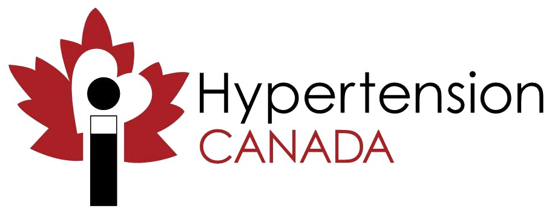
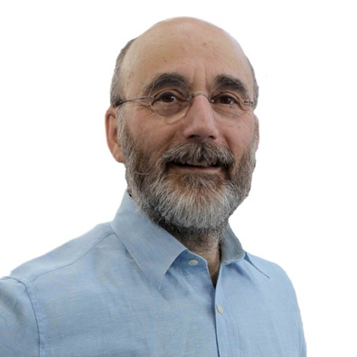
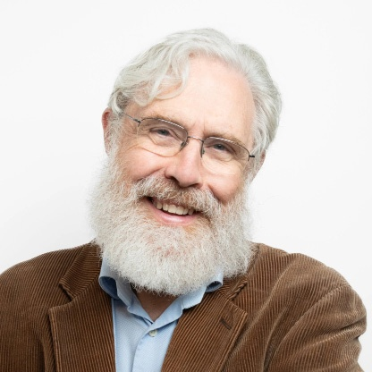

Run SLRs, meta-analyses, and KM-curve digitization to rapidly draft regional HTA submissions.
Map evidence to your PICO, perform ITC / NMA, and draft your dossier.
Rapidly perform SLRs and generate manuscript drafts for your team to refine.
PharmaEssentia used ottoSR to rapidly conduct a meta-analysis that identified novel dosing responses in patient subgroups.
Under 14 daysto complete the meta-analysis
80–90%reported time savings